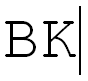

 About Ben Kerby
I am a Junior Application Developer with experience and interest in creating elegant frontends,
utilizing modern technology. Over the course of one year I have assisted in updating 4
intranet applications, both frontend and backend with technology such as, Angular 6+,
Spring Boot, and Web Components. I was born and raised in Omaha Nebraska and went to the
University of Nebraska at Omaha, where I persued my bachelor degree in Computer Science, with
a minor in MIS and IT Innovation. When I am not working or in school I enjoy sailing, fishing, hunting, hanging out
with friends, and napping with my cat Hubert.
Resume